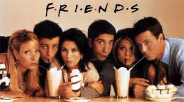

About Meeeee
Basic info
Name: Allen Zhao
DOB: Aug. 20 1994
Occupation: College Sudent
Education:
- Sha Tin Junior School (1999 - 2005)
- Sha Tin College (2005 - 2012)
- University of Michigan (2012 - present)
- B.S.E Computer Science (hopefully)
- B.S.E Electrical Engineering (hopefully)
Wolverineee!!!
Poud wolverince since 2012!
Although it gets a little (just a little, tiny, tiny bit cold) in winter, and despite the town being kinda like a deserted island. Going to UM has been one of the best decisions I've made. Not only have I met some really awesome people, leaned some serously interesting and useful stuff, but in UM I've met...

Kick-ass taekwondo
Another big part of my life is my extra curicculars. I've been doing taekwondo for maybe over a decade now. Although, only after joining UM Takewondo and competing against princeton and cornell, have I realized how much I have yet to improve in taekwondo. Starting next semester, I've really gotta step it up a few notches if I'm going to be one of the main instructors of UMTKD!

My Girlfriend <3
 Honestly, I been spending some seriously unhealthy amounts of time with her, but I love it! She has been been supporting me in my ups and downs with pretty much everything in my life. I can't even being to state how much joy I've had with her. Pretty much every great moment of my college life has included her. She pretty much just makes my life so much better in so many ways.
Honestly, I been spending some seriously unhealthy amounts of time with her, but I love it! She has been been supporting me in my ups and downs with pretty much everything in my life. I can't even being to state how much joy I've had with her. Pretty much every great moment of my college life has included her. She pretty much just makes my life so much better in so many ways.

TV!

So what do I do in my spare time? Well, I actually go this (sorta) bad habit of watching a LOT of TV (while I multi-task and play on my phone simultaenoulsy cause i'm just that good).
Some of the best TV's i've come across are SUITS (WHO ELSE HERE IS A SUITS FAN?) and the old classic Friends! Of course,there are many, many more awesome series that I should mention, but it's late and I'm too lazy to :P